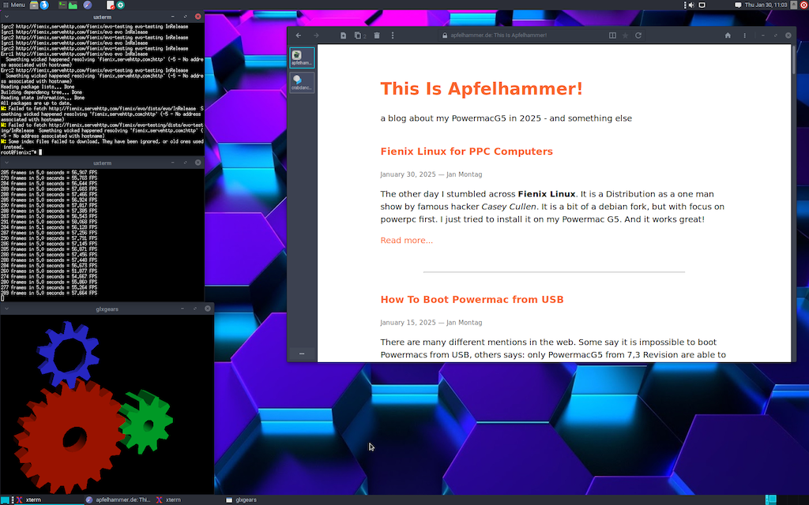

Update to Fienix Linux
As I wrote in a few articles before, I am a big fan of Fienix Linux because it works absolutely amazing on my Powermac G5, it can even render complex and modern Websites like my other Weblog (Ghost CMS) and all the big and modern new Websites.
However, as I continued to use Fienix, I found out that I couldn't install any updates or other software packages. After some research, I discovered that the Fienix APT Repo was down. I asked at the corresponding youtube channel and even at the Website, but there was no answer.
Today, almost by chance, I discovered the official article on the Fienix website. The developer writes:
The Fienix software repository was "unreconciled" due to an unexpected interruption to an update process. Unfortunately, a backup did not exist. Effort to reconcile the repository were unsuccessful. This caused package unavailability, broken packages and broken updates.
He can't fix it in Version 6 so he hopes to get it fixed with Version 7, what is months ago. His solution as follows:
If you have installed all the packages you want/need, you don't need to do anything. Browser updates are generally posted to the "Linux on PowerPC" Facebook group, Hyperion forums, and elsewhere. You can also get packages from Debian, or switch over to Debian completely.
At this point I find it really good that the website, the project and Fienix Linux itself is not dead, it's has a broken APT Repo and need to be fixed, but the developer is willing to continue. That gives me hope for my Powermac G5.
Keep up the great work
(via)
Tags: powermacg5, linux, ppc64, eolie, browser, fienix
Fienix Linux seems to be dead
I find it quite sad because I only recently got to know Fienix Linux, even though it has been around for a long time. And I think it's absolutely great because it works better than any other Linux on the Powermac G5 that I've tried so far:
- Graphics acceleration
- modern web browser
But unfortunately the package sources are dead, this Linux is based on Debian SID and uses APT. The Fienix source server is unreachable and there is no alternative.
I tried to contact the developer, I know that Fienix Linux is a one-man project and therefore there are few resources available, but I haven't received any response.
So it's not really possible to reinstall packages, I also can't install a development environment to compile myself and so it remains nice, but not very expandable and usable.
Tags: powermacg5, linux, ppc64, eolie, browser, fienix
Fienix Linux for PPC Computers
The other day I stumbled across Fienix Linux. It is a Distribution maintained by one man, Casey Cullen. It is based on debian, but with focus on powerpc first. I just tried to install it on my Powermac G5. And it works great!
 Fienix Linux 6.0.1 on my Powermac G5, on real Hardware.
{kind=link}